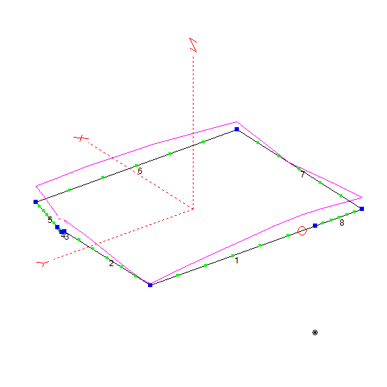

Hi! I'm a newly-licensed ham interested in CW, digital mobile radio decoding, and satellite listening.
As I gain skills, experience, and equipment, I'll add resources and info that were helpful to me to this page.
Current Station
Not much of a station per se, but I'm working on it lol
-
- RTL-SDR Blog v3: Highly affordable and highly recommended. Get the kit that includes the telescoping dipole. Available on Amazon or on rtl-sdr.com. Works for HF in a pinch, but far from ideal.
- - RTL-SDR Blog Low-Noise Amp: This amp has definitely helped me get more out of my RTL-SDR. Well-recommended.
- - RTL-SDR Blog FM Band-Stop Filter: This filter works as advertised, blocking out broadcast FM. This hasn't done much for me so far, as I don't really have issues with FM overloading the SDR.
-
- Baofeng AR-5RM: A cheap handheld transciever that has worked well for me on my local repeater. I've also been able to pick up some air band communications on it. The FM band-stop filter and the dipole that came with the RTL-SDR can also work (for RX only!) with this radio.
- - Diamond RH77CA replacement whip: A higher-quality antenna than the one that comes standard on the Baofeng, but not enough of an improvement for this radio to justify the cost. Still, it's good to have around to attach to another HT later down the line.
-
- AirSpy HF+ Discovery: A large step up over the RTL-SDR, especially on HF. It's much more expensive, but I recommend it for anyone looking into tinkering with antennas and listening below 30 MHz.
-
- Bencher BY-1: A solid morse code paddle on the more affordable end, especially when you get it secondhand. I was able to set it up to work comfortably for me with the adjustment tool that attaches to the bottom. Get one used on eHam classifieds, HamEstate, or eBay.
-
- LogiKey K3: A CW keyer that I use to practice sending. It has a few issues, including that the paddle input is 3.5mm instead of the standard 1/4", and that there's no battery or volume adjustment built in. However, it has all the features I've needed and has worked well for me so far. Again, get it used. The user interface is operated by sending and receiving morse code to the device, which is a pretty neat feature.
-
- The apartment loop: I put together a basic compromise loop antenna for HF by hanging a loop of wire around the perimeter of my apartment at the ceiling and tuning it to resonate on 20m. It settled at a total length of approximately 20.96m. I've been able to receive CW, SSB, and FT8 on 40m and 20m with it, but more iteration and RF exposure calculations are required before I can try any TX on it.

-
- MLA-30+ Receiving Loop: This active loop works okay for receiving, but can't transmit. It's affordable and does HF/shortwave listening well enough, but I'd recommend trying your hand at building a homebrew loop before you go out and buy one.
General Reference
HamStudy.org: My go-to resource for studying for the FCC exams. The Technician course got me a perfect score on the Technician license exam, and I'm currently using the study mode to prep for the General exam.
COASTAL WAVES & WIRES (K4OGO) on YouTube: A good channel for info on all kinds of antennas, especially for HF. Doesn't cover much in the realm of antennas for small spaces, but good for getting an idea of what's possible.
K7MEM's interactive amateur band plan: My usual reference for getting oriented on the bands, since it includes all the info I need in a more visual format.
CW
Learning
LCWO.net: An excellent site for CW drills. I found the Koch method course challenging, but I'm improving my copying skills a lot by just sticking with it and repeating each lesson until the new characters stick.
Gear
UtahForrest (KI7QCF) on YouTube: A good source for advice on choosing equipment and getting set up as a beginner.
Digital Decoding
RadioReference Database: A database of radio systems and frequencies broken down by location. Good for finding something to decode or identifying a control channel you find.
SDRTrunk: An open-source app for decoding trunked digital systems.
Satellite Work
SaveItForParts on YouTube: A YouTube channel with beginner-friendly tutorials on setting up an RTL-SDR to receive and decode weather satellite transmissions.
73 de N7BNL